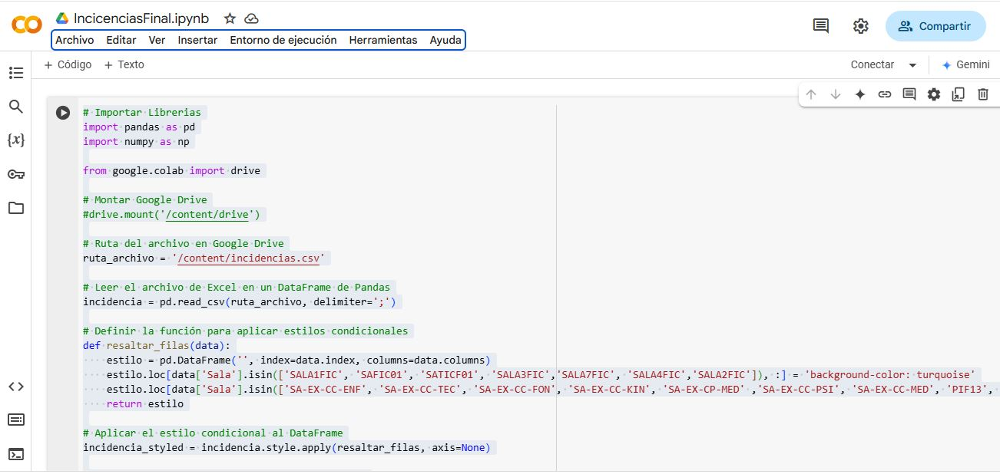

Análisis y procesamiento de datos de incidencias docentes con Python y Pandas

Consulta SQL para realizar la extracción, transformación y carga (ETL)
Análisis y Procesamiento de Datos
Este script automatiza la limpieza, análisis y organización de datos relacionados con incidencias en salas de clases, utilizando Python y la biblioteca Pandas. Está diseñado para procesar archivos CSV y generar reportes en Excel, lo que facilita la gestión y el seguimiento de eventos en distintos espacios educativos.
Tecnologías Utilizadas
- Lenguaje: Python
- Bibliotecas:
pandas: Manipulación y análisis de datos en estructuras tabulares.numpy: Operaciones numéricas y manejo de valores nulos.google.colab.drive: Trabajo con archivos almacenados en Google Drive.
Flujo del Script
1. Carga del Archivo de Datos
Se lee un archivo CSV (incidencias.csv) que contiene información sobre horarios, asignaturas, salas y registros de asistencia docente.
2. Procesamiento de Datos
- Eliminación de 25 columnas innecesarias para optimizar la base de datos.
- Identificación de valores vacíos en las columnas clave (Hrs. Log. y Hora salida).
- Categorización de registros en tres grupos:
- "Horario Intermedio": Datos incompletos.
- "Campo Clínico": Salas específicas del área de salud.
- "Online": Registros correspondientes a clases virtuales.
3. Organización y Ordenamiento
Se ordenan los datos por fecha y, dentro de cada día, por código de ramo y sección.
4. Visualización y Estilización
Se aplican estilos de color para resaltar categorías específicas en la tabla:
- Turquesa para las clases online.
- Amarillo para espacios de campo clínico.
5. Generación de Reportes Automatizados
Se exportan los datos procesados en archivos Excel, organizando cada día en un archivo independiente.
¿Por qué es útil?
- Facilita la identificación de incidencias Docentes.
- Optimiza la revisión de registros de asistencia y horarios de los Docentes.
- Automatiza la generación de reportes en Excel, ahorrando tiempo y reduciendo errores manuales.
- Mejora la visualización de datos mediante estilos condicionales.
Este script es una muestra práctica de cómo Python y Pandas pueden mejorar la gestión y análisis de datos en entornos educativos o administrativos.
Repositorio
Puedes acceder al código fuente en GitHub.
Volver al Portafolio